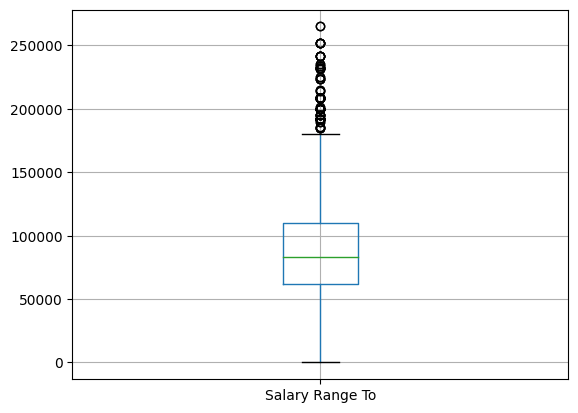

#import necessary libraries
import pandas as pd
import numpy as np
from scipy import stats
import matplotlib.pyplot as pltHW2: Part B - Applications
Part B - Application
Question 1 (job-seeking dataset)
You have collected the data for assisting students in job seeking (Assignment 01, Part B, Prompt 1) and saved it as a .csv file. Apply the Python pandas package to the data you have collected, demonstrate how we can use it to get a better understanding of the data.
Note from Jasmine: I decided to use a different dataset than the one I created in HW1 for the sake of this HW problem. This was because the dataset I built in HW1 was very limited in information and thus difficult to accomplish certain parts of this assignment. For instance, did NOT have any numerical data because the “salary” column contained much more different salary information than I was expecting. So I selected a data set on the same topic (job openings) but with much more useful information to accomplish this part of the assignment.
The single CSV dataset I used for this assignment: https://catalog.data.gov/dataset/nyc-jobs
About the dataset that I used for this assignment: I cleaned the data in a separate notebook. It’s not necessarily filtered with only STEM positions.
Read in the data
# read the data
df = pd.read_csv('JasmineKobayashiA02Positions.csv')# Quick peek at the df
print('total # of rows in df:',len(df))
df.head()total # of rows in df: 5519| Agency | # Of Positions | Business Title | Civil Service Title | Title Classification | Job Category | Full-Time/Part-Time indicator | Career Level | Salary Range From | Salary Range To | Salary Frequency | Work Location | Job Description | Minimum Qual Requirements | Hours/Shift | Residency Requirement | Posting Date | Post Until | |
|---|---|---|---|---|---|---|---|---|---|---|---|---|---|---|---|---|---|---|
| 0 | NYC HOUSING AUTHORITY | 1 | Director, IT Program Management Office | COMPUTER SYSTEMS MANAGER | Competitive-1 | Technology, Data & Innovation | F | Manager | 80931.0 | 208826.0 | Annual | ESM-Program & Portfolio Mgt | The NYCHA IT Department seeks a motivated cand... | 1. A master's degree in computer science from ... | NaN | NYCHA has no residency requirements. | 12/07/2022 | NaN |
| 1 | DEPT OF ENVIRONMENT PROTECTION | 2 | Change Order Manager | PRINCIPAL ADMINISTRATIVE ASSOC | Competitive-1 | Engineering, Architecture, & Planning Finance,... | F | Experienced (non-manager) | 58695.0 | 89699.0 | Annual | 96-05 Horace Harding Expway | The NYC Department of Environmental Protection... | 1. A baccalaureate degree from an accredited c... | NaN | New York City residency is generally required ... | 12/13/2022 | NaN |
| 2 | DEPT OF ENVIRONMENT PROTECTION | 1 | ACCOUNTABLE MANAGER | ADM ENGINEER (NON MGRL) | Competitive-1 | Engineering, Architecture, & Planning Public S... | F | Experienced (non-manager) | 53702.0 | 146121.0 | Annual | 96-05 Horace Harding Expway | The NYC Department of Environmental Protection... | 1. A valid New York State License as a Profess... | NaN | New York City Residency is not required for th... | 01/09/2023 | NaN |
| 3 | DISTRICT ATTORNEY RICHMOND COU | 1 | Assistant District Attorney - Domestic Violenc... | ASSISTANT DISTRICT ATTORNEY (S | Exempt-4 | Legal Affairs | F | Manager | 77000.0 | 93000.0 | Annual | 130 Stuyvesant Place, S.I. | RICHMOND COUNTY DISTRICT ATTORNEY The men and... | 1. New York State Bar Admission. 2. Three ... | NaN | New York City residency is generally required ... | 05/11/2022 | NaN |
| 4 | HRA/DEPT OF SOCIAL SERVICES | 1 | SENIOR PROCUREMENT AND CONTRACT ANALYST | ASSOCIATE STAFF ANALYST | Competitive-1 | Administration & Human Resources Policy, Resea... | F | Experienced (non-manager) | 70611.0 | 86887.0 | Annual | 4 World Trade Center | The Department of Social Services (DSS) is com... | 1. A master’s degree from an accredited coll... | NaN | New York City residency is generally required ... | 04/18/2022 | NaN |
Basic info of the dataset
Objects, attributes, datatype of attributes, etc.
Reminder to self (copied from class slides and class recommended textbook):
Object - entity: abstract data structure with certain attributes/features/dimensions/variables
Attributes - characteristic or feature of a data object (Categorical: nominal, binary, ordinal; Numerical: interval-scaled, ratio-scaled, discrete or continuous.
df.info()<class 'pandas.core.frame.DataFrame'>
RangeIndex: 5519 entries, 0 to 5518
Data columns (total 18 columns):
# Column Non-Null Count Dtype
--- ------ -------------- -----
0 Agency 5519 non-null object
1 # Of Positions 5519 non-null int64
2 Business Title 5519 non-null object
3 Civil Service Title 5519 non-null object
4 Title Classification 5519 non-null object
5 Job Category 5517 non-null object
6 Full-Time/Part-Time indicator 5293 non-null object
7 Career Level 5517 non-null object
8 Salary Range From 5519 non-null float64
9 Salary Range To 5519 non-null float64
10 Salary Frequency 5519 non-null object
11 Work Location 5519 non-null object
12 Job Description 5519 non-null object
13 Minimum Qual Requirements 5461 non-null object
14 Hours/Shift 1953 non-null object
15 Residency Requirement 5519 non-null object
16 Posting Date 5519 non-null object
17 Post Until 1687 non-null object
dtypes: float64(2), int64(1), object(15)
memory usage: 776.2+ KB# objects = available job positions
# attributes = company name, full vs. part-time (binary),Salary info, location, etc.
# categorical attributes
cat_att = ['Title Classification', # ordinal (rank)
'Job Category', # nominal (categorical)
'Full-Time/Part-Time indicator', # binary
'Career Level', # ordinal
'Salary Frequency', # nominal
'Residency Requirement',] # nominal
# numerical attributes
num_att = ['# Of Positions','Salary Range From','Salary Range To'] # all ratio-scaled (I think)For a categorical attribute:
Value Counts
for i in cat_att:
print(i+':')
display(df[i].value_counts())Title Classification:
Job Category:
Full-Time/Part-Time indicator:
Career Level:
Salary Frequency:
Residency Requirement:Competitive-1 3359
Non-Competitive-5 1735
Pending Classification-2 241
Exempt-4 131
Labor-3 53
Name: Title Classification, dtype: int64Engineering, Architecture, & Planning 682
Technology, Data & Innovation 474
Legal Affairs 444
Building Operations & Maintenance 304
Finance, Accounting, & Procurement 296
...
Administration & Human Resources Policy, Research & Analysis Public Safety, Inspections, & Enforcement Social Services 1
Administration & Human Resources Communications & Intergovernmental Affairs Engineering, Architecture, & Planning Health Policy, Research & Analysis Public Safety, Inspections, & Enforcement 1
Administration & Human Resources Building Operations & Maintenance Public Safety, Inspections, & Enforcement 1
Constituent Services & Community Programs Engineering, Architecture, & Planning Public Safety, Inspections, & Enforcement 1
Constituent Services & Community Programs Communications & Intergovernmental Affairs Engineering, Architecture, & Planning Technology, Data & Innovation Policy, Research & Analysis Public Safety, Inspections, & Enforcement Social Services 1
Name: Job Category, Length: 190, dtype: int64F 5115
P 178
Name: Full-Time/Part-Time indicator, dtype: int64Experienced (non-manager) 4138
Manager 617
Entry-Level 610
Executive 88
Student 64
Name: Career Level, dtype: int64Annual 5129
Hourly 328
Daily 62
Name: Salary Frequency, dtype: int64New York City residency is generally required within 90 days of appointment. However, City Employees in certain titles who have worked for the City for 2 continuous years may also be eligible to reside in Nassau, Suffolk, Putnam, Westchester, Rockland, or Orange County. To determine if the residency requirement applies to you, please discuss with the agency representative at the time of interview. 3316
New York City Residency is not required for this position 1068
NYCHA has no residency requirements. 365
New York City Residency is not required for this position. 210
City Residency is not required for this position 66
...
Pursuant to New York City Administrative Code § 12-121(a), New York City residency is not required for this position. City employees are required to report to work in-person. 2
NYC RESIDENCY IS NOT REQUIRED FO THIS POSITION 2
New York City residency is generally required within 90 days of appointment. However, City Employees in certain titles who have worked for the City for 2 continuous years may also be eligible to reside in Nassau, Suffolk, Putnam, Westchester, Rockland, or Orange County. To determine if the residency requirement applies to you, please discuss with the agency representative at the time of interview. 2
The New York City Administrative Code requires an employee in this title to establish city residence within 90 days of entering City service and to remain in compliance with the city residence requirement as a condition of employment. 1
New York City residency is generally required within 90 days of appointment. However, City Employees in certain titles who have worked for the City for 2 continuous years may also be eligible to reside in Nassau, Suffolk, Putnam, Westchester, Rockland, or Orange County. To determine if the residency requirement applies to you, please discuss with the agency representative at the time of intervie 1
Name: Residency Requirement, Length: 88, dtype: int64For a numerical attribute
Data basics: Min, Max
# Basics: min & max
for i in num_att:
print("\'"+i+"\' :")
print('Min:',df[i].min())
print('Max:',df[i].max())
print()'# Of Positions' :
Min: 1
Max: 250
'Salary Range From' :
Min: 0.0
Max: 250000.0
'Salary Range To' :
Min: 15.0
Max: 265000.0
Data Central Tendency: Mean, Median, Mode
# Central tendency: mean, median, mode
import statistics
for i in num_att:
print("\'"+i+"\' :")
print('Mean:',statistics.mean(df[i]))
print('Median:',df[i].median())
print('Mode:',df[i].mode()[0])
print()'# Of Positions' :
Mean: 2.3897445189345894
Median: 1.0
Mode: 1
'Salary Range From' :
Mean: 62416.43542382678
Median: 60171.0
Mode: 54100.0
'Salary Range To' :
Mean: 86458.16485876065
Median: 83399.0
Mode: 83981.0
Data Dispersion: Range, Midrange, Quartiles, IQR, Variance, Std, Outliers
for i in num_att:
print("\'"+i+"\' :")
Max = df[i].max()
Min = df[i].min()
print('Range:',Max-Min)
print('Midrange:',(Max-Min)/2)
quan = df[i].quantile([0.25,0.5,0.75])
for j in [0.25,0.5,0.75]:
print('Quantile {}: {}'.format(j,quan[j]))
print('IQR:',quan[0.75] - quan[0.25])
print('Variance:',df[i].var())
print('Std:',df[i].std())
print()'# Of Positions' :
Range: 249
Midrange: 124.5
Quantile 0.25: 1.0
Quantile 0.5: 1.0
Quantile 0.75: 1.0
IQR: 0.0
Variance: 88.83447980061102
Std: 9.42520449648765
'Salary Range From' :
Range: 250000.0
Midrange: 125000.0
Quantile 0.25: 50000.0
Quantile 0.5: 60171.0
Quantile 0.75: 75504.0
IQR: 25504.0
Variance: 896276901.9839704
Std: 29937.884059899265
'Salary Range To' :
Range: 264985.0
Midrange: 132492.5
Quantile 0.25: 62215.0
Quantile 0.5: 83399.0
Quantile 0.75: 109990.0
IQR: 47775.0
Variance: 1919148551.416429
Std: 43808.0877397819
Some plots (just because)
df['Salary Range From'].plot.density()<AxesSubplot: ylabel='Density'>df.boxplot(column='Salary Range From')<AxesSubplot: >
df['Salary Range To'].plot.density()<AxesSubplot: ylabel='Density'>df.boxplot(column=['Salary Range To'])<AxesSubplot: >
What knowledge may be mined from this data set?
Categorical
Over half of the positions are considered “competitive” (the other (less than) half are either non-competitive or not categorized)
There are 190 job categories in the data set
There are significantly more full-time positions than part-time
The most sought-after “Career Level” is an “Experienced non-manager”
The least sought-after is the “Students” category specifically
But there are a considerable amount of Entry-level jobs
And even though I didn’t filter this dataset to consist of only STEM positions, there’s some useful information related to the most sought-after job categories
Engineering is the most sought-after job category
“Technology, Data & Innovation” and “Legal Affairs” are the next two sought-after categories.
In other words, the top two sought-after categories are in the STEM field. And that seems like pretty useful or at least reassuring information for someone who studied a program in the STEM field.
(The “Residency Requirement” category just showed that I probably needed to do more data cleaning, because I could see that some entries were technically the same but the code considered them different because of very small typos.)
Numerical
- Most places had only one position open, but some apparently had as many as 250 positions available
The “Salary Range From” column (in other words the minimum salary)
Apparently, it was possible to start with no salary at all according to the occurrence of zero (but I’m not entirely sure if that’s just a data cleaning negligence on my part).
The 3rd quartile and maximum value showed that it’s possible to have a 6-figure minimum salary
The “Salary Range To”
- The most anyone could make from any of these position postings is $265000 (annually I’m sure).
How would the knowledge be useful in some applications?
The information from the categorical attributes can be useful in understanding the types of jobs that are out there and what are the most sought-after.
And the information from the numerical attributes can give a sense of the range of salaries to potentially keep in mind (although it might be more useful to group and associate them with specific categories in the categorical attributes).
Question 2 (News data)
You have collected data of news (Assignment 01, Part B, Prompt 2) and saved it as a .csv file. Perform text processing (refer tutorial). Label the data as positive/negative sentiments.
Note from Jasmine: I probably won’t be able to finish this part on time again. Although I really will try to get around to it once some of my other deadlines settle down.
But I think I would like to explain something since I understand that there’s an effort being made by both the TA and the professor to specifically tailor the exercises to maximize benefits for all students. And I want to make this note to relieve some potential concerns about the skills I’ve been slacking practice on. The note is that I don’t anticipate a lot of text processing in the career field I hope to enter.
With my background in physics, I, personally, hope to apply my data science skills to science/physics research (maybe space physics specifically). And most of the data worked within that field tends to be numeric and categorical, and I can’t imagine much potential in text processing or sentiment analysis in physics research data (because ideally nothing in physics is based on emotion).
I’m not trying to say that I don’t need this practice nor am I trying to “justify” my slacking. I just thought I would explain why these text-processing parts of the assignments so far have been a lower-priority exercise for me compared to the rest of the exercises.
I’m sure it would still be a potentially useful skill and practice, and I know it will probably be needed for the rest of the work in this class so again I plan to get around to it eventually. But I thought this might be a potentially useful thought process to explain.